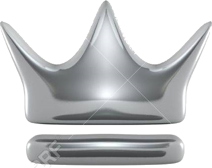
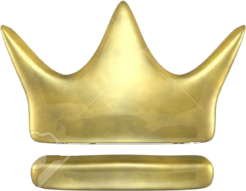

Doll Judgment ~ The Girl who Played with People's Shapes
same as Track Title
04:33
03
オリエンタルダークフライト
Oriental Dark Flight
same as Track Title
04:02
04
天空のグリニッジ ～ Deep P Sky
Greenwich in the Sky ~ Deep P Sky
same as Track Title
04:58
05
天狗が見ている ～ Eye of the Needles
Tengu is Watching ~ Eye of the Needles
天狗が見ている ～ Black Eyes
04:33
06
妖怪の山 ～ Mysterious Mountain
Youkai Mountain ~ Mysterious Mountain
same as Track Title
05:24
07
花の映る塚 彼岸の塚 ～ Unnamed Scenery
The Mound where the Flowers Reflect - Mound of Life ~ Unnamed Scenery
花の映る塚 此岸の塚
03:29
08
亡き王女の為のセプテット ～ Ascending Into Naught
Septette for the Dead Princess ~ Ascending Into Naught
same as Track Title
07:24
09
彼岸の奴隷 ～ One Conclusion
Higan Servant ~ One Conclusion
彼岸帰航 ～ Riverside View
02:47
10
幻想、夢の終わり
End of Illusions and Dreams
麓の神社
05:37
In 2008, Sendaisoushi ~Offering to The Sukhavati~ brought Demetori back on track with a more multifaceted approach on the metal genre.
With rough compositions such as Deep P Sky and melody driven tracks like Innocent Treasures and Eye of the Needles, Demetori truly
shines with its technique and guitar riffs. Especially the track Septette for the Dead Princess has burned itself into the minds of many fans.
The Comiket Event is heavily backed up by Demetori's presence and some enthusiasts are coming to the convention solely to meet them in person.
Track 10 was included in a reprinted album that was later released at Reitaisai 8.
Site Admin's Recommended Tracks:
Septette for the Dead Princess ~ Ascending Into Naught
Greenwich in the Sky ~ Deep P Sky
Kid's Festival ~ Innocent Treasures